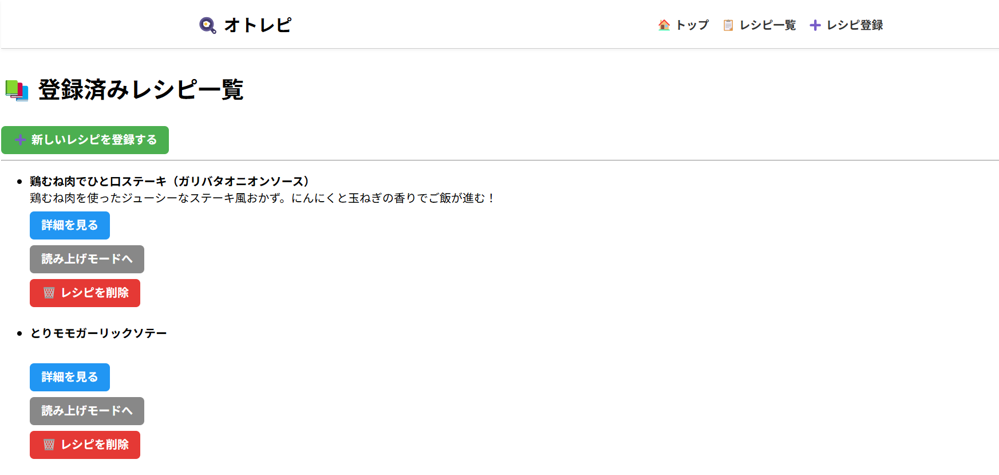
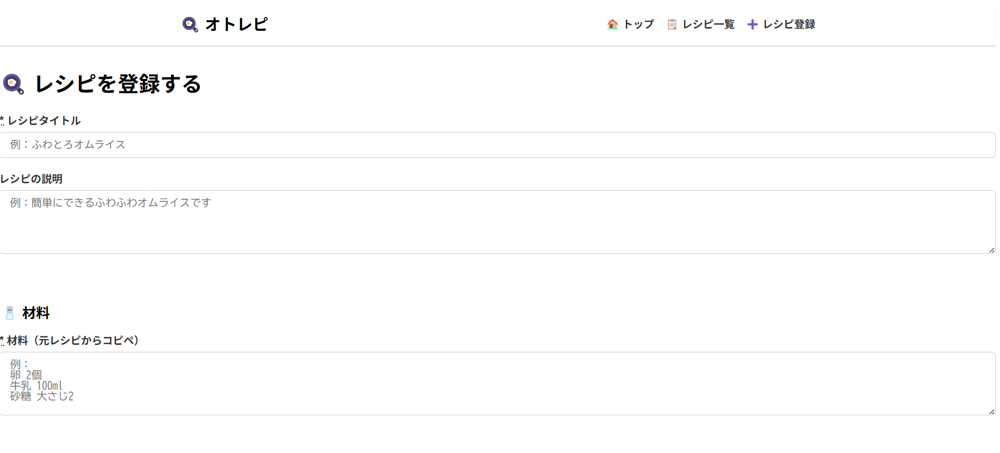

オトレピ（料理レシピ読み上げアプリ）
開発環境
Ruby / Ruby on Rails / MySQL / JavaScript / Web Speech API / GitHub / Render / Visual Studio Code / Slack
-
概要
制作時間 50時間 URL https://otorepi.onrender.com ID admin PASS 2222 -
動作テスト
テスト用アカウント
mail test@test.com PASS 111111
OUTLINEアプリケーションの概要
オリジナルアプリケーションとして、調理中でも快適に使える料理レシピ読み上げアプリを開発しました。
主な機能は、レシピ投稿・編集機能、レシピの読み上げ機能、ステップ表示機能です。
トップページにアクセスすると、登録されたレシピが一覧で表示されます。レシピを選択すると、材料や手順が確認でき、さらに「読み上げ」ボタンを押すことで、調理手順を音声で聞くことができます。ただし登録されているレシピを使うことしかできません。
ユーザー登録をすると、自分のレシピを登録して読み上げ機能を使用可能になります。
-
開発に至った経緯
普段、休日に料理をする中で、「レシピを見ながら調理を進めるのが意外と不便だな」と感じることがありました。特に手が濡れていたり、フライパンを離れられないタイミングで、スマホの画面をスクロールするのが煩わしく、ストレスになることが多かったです。
そんな中、妻に「どんなアプリがあったら便利だと思う？」と聞いたところ、「料理中に手を使わずにレシピを確認できるようなアプリがあれば助かるかも」というアイディアをもらいました。たしかに、家事や育児で忙しい中、少しでもストレスを減らせる仕組みがあれば便利だと感じました。
また、既存のレシピサイトや動画サービスは、情報は豊富でも「音声で手順を読み上げてくれる」ようなサービスは少なく、調理中の使いやすさに配慮されたものは限られていると感じていました。
そこで、手を使わずにレシピを確認できる「読み上げ機能付きの料理レシピアプリ」があれば、日々の料理がもっと快適になると考え、開発に取り組むことにしました。
-
開発で工夫したこと
1つ目が、本アプリケーションのポイントであるレシピの音声読み上げ機能です。Web Speech APIを利用し、調理手順を一文ずつ読み上げることで、ユーザーが画面を見たり操作することなく、手順を確認できるように設計しています。今後は、読み上げのスピードやタイミングをユーザーが調整できる機能の追加も検討しています。
2つ目が、ステップごとのレシピ構成です。長い文章でレシピを表示するのではなく、工程を一つずつ区切り、視認性と操作性を高める工夫をしています。将来的には、音声読み上げと連動してステップがハイライト表示される機能も盛り込みたいと考えています。
3つ目が、スマートフォンでの利用を前提としたUI設計です。調理中の利用を想定し、「片手で操作しやすい」「大きなボタン配置」「文字の見やすさ」などを意識してデザインを行っています。今後、配色や余白についてもユーザビリティを重視して微調整を加えていく予定です。
現在は開発中の段階ですが、完成後は家族や知人を中心に実際の調理シーンで使用してもらい、ヒアリングを通じて改善を重ねていく計画です。
-
今後実装したいと思っていること
今後の開発予定として、レシピやユーザーを管理する管理者機能を実装したいと考えています。具体的には、ActiveAdminなどを用いた管理画面の導入を検討しています。理由は主に2つあります。
1つ目が、レシピ内容の品質維持のためです。今後ユーザーによるレシピ投稿機能を一般公開することを想定しているため、不適切な表現や誤情報を含む投稿を管理者が確認し、必要に応じて編集・削除できるようにする必要があります。これにより、安心して利用できるアプリケーション運営を目指します。
2つ目が、レシピジャンルやタグの整理・統合を円滑に行うためです。ユーザーが自由にタグやジャンルを設定できる仕組みは柔軟性がありますが、同じ意味のタグが複数存在するなど、分類が煩雑になる懸念もあります。そのため、ユーザーからの要望をもとに、管理者がジャンルやタグの追加・編集を行う運用を想定しています。
このような運営体制を整えることで、アプリケーションの信頼性と使いやすさを高め、継続的に価値を提供できるサービスに育てていきたいと考えています。